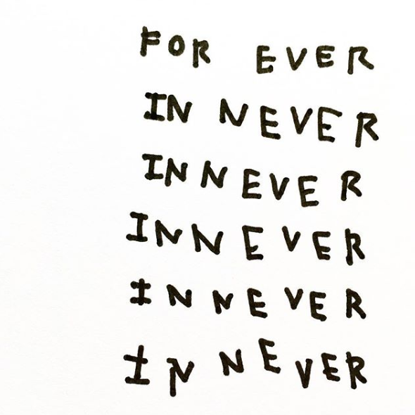

Forever in Never

Forever In Never
JLW has been filling 9"x6" hardback sketchbooks with drawings since 2010. Mainly line drawings in black and white only, JLW crafts an expressionistic style. Taking influence from artists such as Cy Twombly and Jean Michel Basquiat, JLW employs writing and wordplay in his pieces. Written in bad handwriting and ostensibly using incorrect words that sound like the expression, "forever and ever", JLW conveys never-ending disappointment felt when expectations of everlasting love are are cancelled with the end of a relationship.